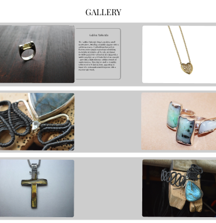
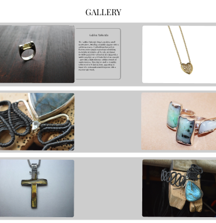

Professional Skills
 

Group Prototype
After we were done with our own Prototypes we showed them to each other and after that we combined into one which you can see on the images. I am responsible for creating
an About Us page, it's design, placement and connections. I also created Rings section along with the conections to it, we also agreed to use the video I made in our final result.
The Group Website relates to the Design Learning Outcome because it has layout and look and feel of media product. It is also relates to the Interactive Media Learning Outcome because
it is a high fidelity prototype that we tested among the users and found out how easily they can navigate through it. After those testings we changed the Prototype according
to feedback we got and ended up with this final result. So, it relates to Interactive Media Outcome becuase it has iterations and because it is a prototype that the user can
easily navigate through.